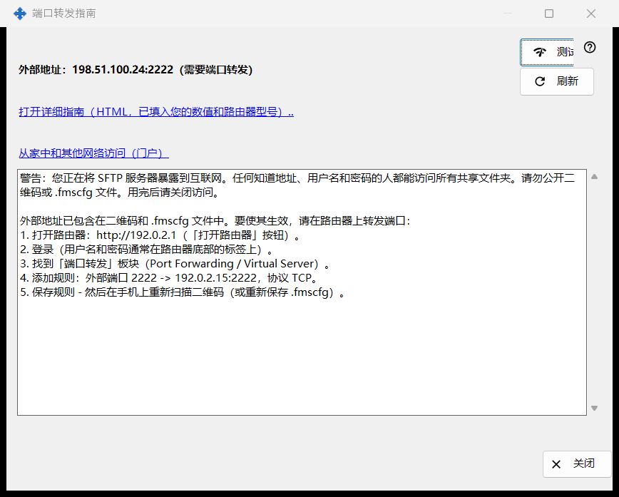
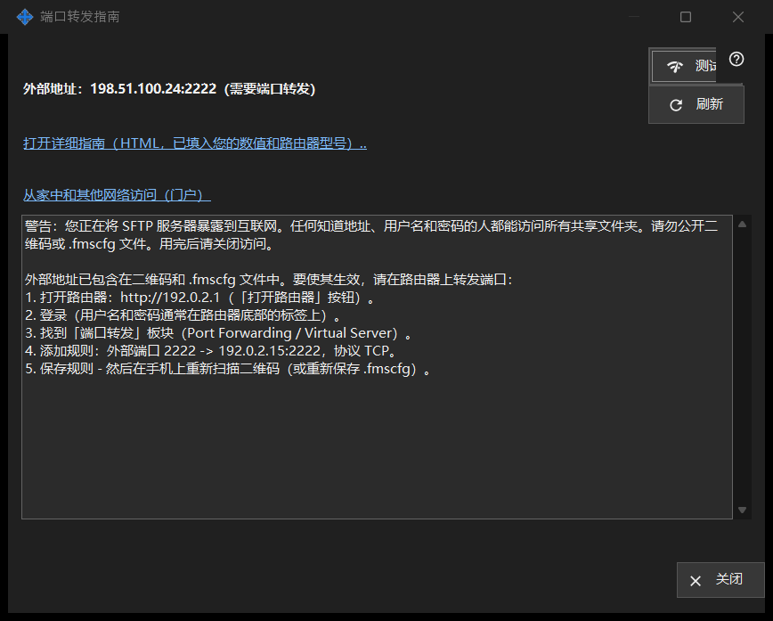

端口转发指南
用途说明
帮助让共享能从家庭网络之外访问。它显示外部地址，以及端口是自动开放的还是需要在路由器上转发，并提供测试和详细指南。它从主窗口的「如何设置互联网访问」按钮打开。


操作顺序
- 先开始共享；否则窗口会提示您这样做。
- 阅读状态行：可访问、位于 CGNAT 之后，或需要端口转发。
- 如果需要转发，打开详细指南并在路由器上创建规则。
- 点击「测试」，从这台电脑探测该地址。
- 让手机关闭 Wi-Fi、使用移动数据来确认。
界面元素
状态
窗口会检测外部地址，并显示下列之一：「可从互联网访问」、「外部地址：..（需要端口转发）」、「外部地址未知 - 请在路由器中查看。」或「位于 CGNAT 之后 - 外网无法访问。」。端口被自动开放（UPnP）时无需设置路由器，但只有使用移动数据的手机才能确认它确实可用。「刷新」重新检测。
路由器和指南
路由器一行显示其地址，搜索期间则显示「正在检测路由器..」。链接「打开详细指南（HTML，已填入您的数值和路由器型号）..」打开本地 HTML 指南；若无法打开，窗口会说明。链接「从家中和其他网络访问（门户）」在浏览器中打开帮助门户的对应页面。
测试
从这台电脑探测外部地址，并报告：「SFTP 服务器可访问」、「端口已开放，但 SFTP 无响应」、连接被关闭（可能是连接数上限）或无应答。该结果并非定论：许多路由器会拒绝从内部发往其自身外部地址的请求，所以可靠的检查方式是使用移动数据的手机。
安全
把 SFTP 开放到互联网，意味着任何得知地址、登录名和密码的人都能获得每个共享文件夹。不要公开二维码或 .fmscfg 文件，用完后请关闭共享。「关闭」离开窗口。